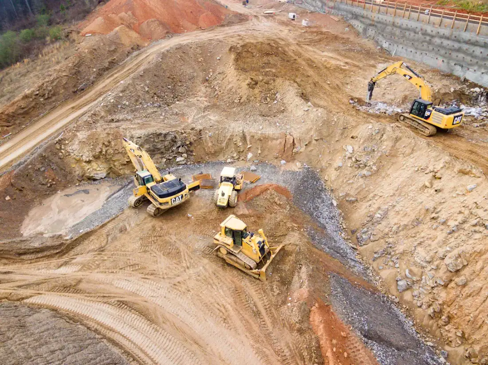
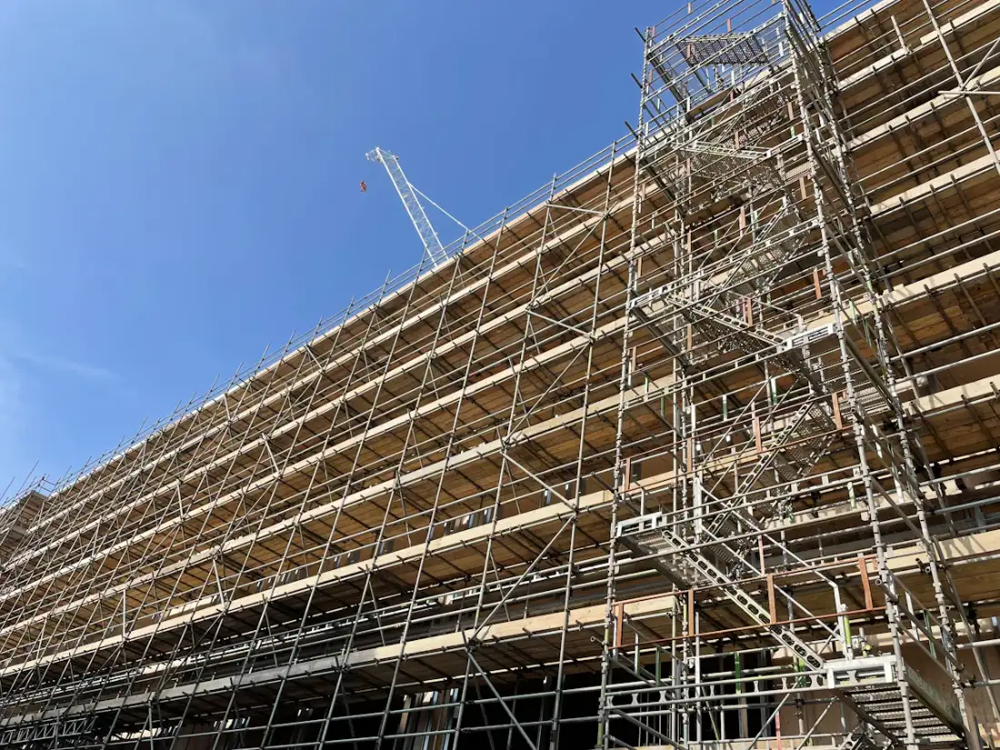

業務 一建築工事
業務の概要
住宅、店舗、事務所、倉庫などの新築工事を行います。図面と仕様を確認したうえで工程を組み、基礎・躯体工事から内外装の仕上げまでを順に進めます。
- 木造・鉄骨造などの新築工事
- 基礎工事・躯体工事
- 内装・外装の仕上げ工事
建築工事・土木工事・改修工事の三つを柱に、建物と暮らしの基盤づくりに取り組んでいます。
※写真はイメージです
私たちの仕事
工事の大小にかかわらず、まずは現地を確認し、目的やご予算に合わせた進め方をご提案します。施工中は安全管理と工程の共有を徹底し、完成後の気になる点にも対応します。
※掲載している工事の種類と業務内容は、ホームページ見本用のサンプルです。
住宅、店舗、事務所、倉庫などの新築工事を行います。図面と仕様を確認したうえで工程を組み、基礎・躯体工事から内外装の仕上げまでを順に進めます。

宅地や敷地の造成、外構、舗装、排水設備など、建物と暮らしの土台となる工事を行います。周辺の通行や騒音にも配慮しながら施工します。

経年により傷んだ建物の修繕や、使い方の変化に合わせた改修を行います。現地調査で状態を確認し、優先度の高い工事から整理してご提案します。
対応エリア
エリア外の工事についても、内容によってはご相談に応じます。
お問い合わせ
工事の内容が決まっていない段階でもかまいません。お電話またはメールでご連絡ください。
※デモ表示の項目は押しても発信・送信されません。